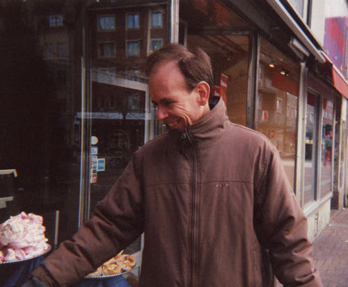
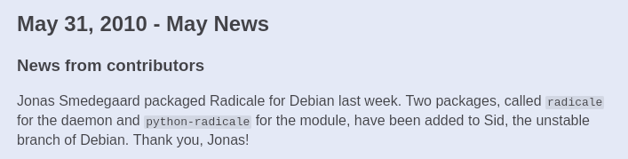
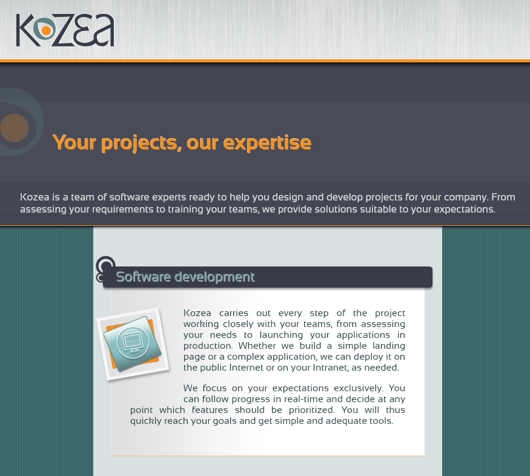
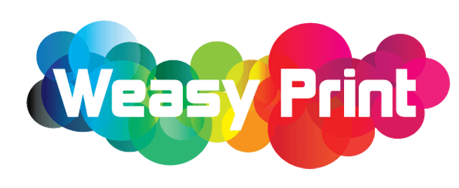
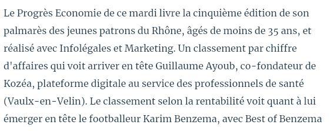
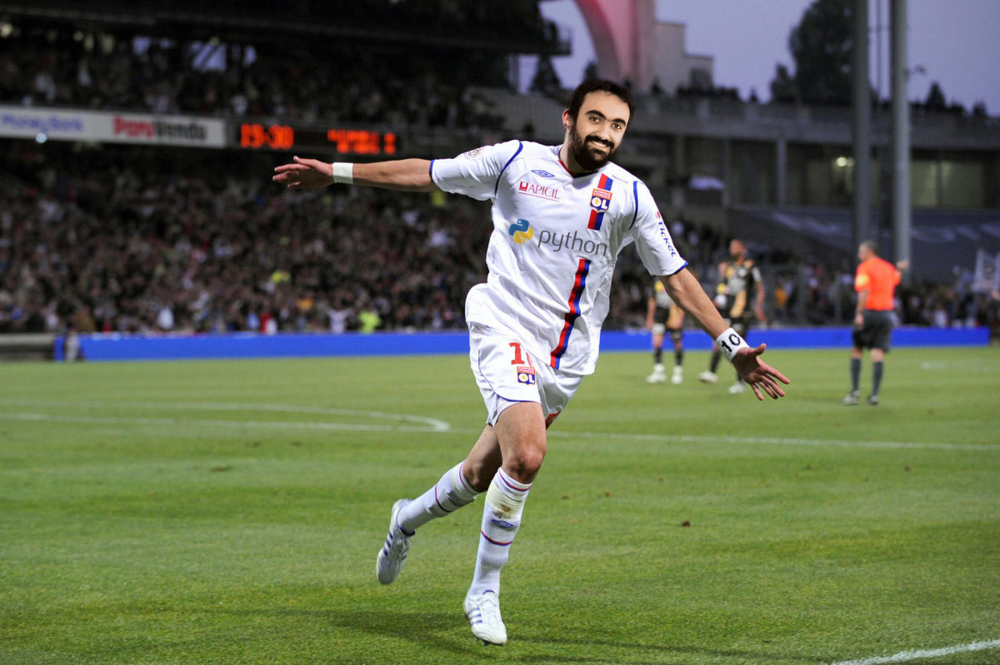
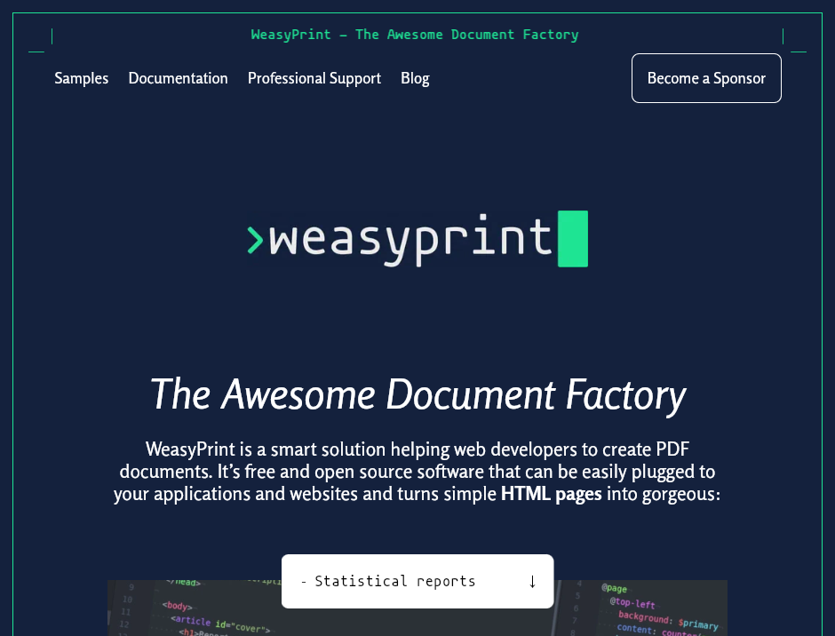
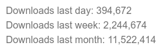
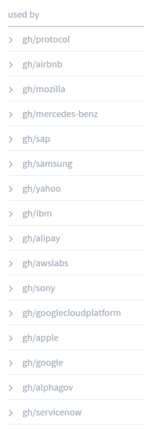

Guillaume Ayoub − INSA Lyon − 27 novembre 2025
Je m’appelle Guillaume Ayoub,
mon travail est de développer des logiciels libres,
et je suis là pour un court témoignage.
(Je vais vous raconter un peu ma vie, quoi.)
Je dois vous avouer un truc.
Je mène depuis très longtemps une double vie.
Pleine de liberté 🕊️, de Python 🐍 et d’amour ❤️🔥.
Enfin, plutôt dans le centre informatique de FIMI.

Mats Bengtsson, le créateur de Coccinella…
… qui m’a accueilli dans le projet
très simplement,
très chaleureusement,
et avec classe.
Gentlemen…
(Tellement que j’ai mis 6 ans à en sortir !)
Mais… je préférais écrire du code libre.
RADICALE
(Dans super longtemps, quand j’aurai 40 ans au moins !)
Créer un logiciel libre que tout le monde puisse utiliser, et qui soit packagé dans une distribution Linux. 🐧

(On était 3.)

J’avais la possibilité de créer et développer
quelques projets libres utilisés en interne.

WeasyPrint, un logiciel de génération de documents
à partir des technologies du web.
J’accompagne celles et ceux qui veulent, tout autour de moi, automatiser leur génération de documents.
Et en plus je me suis associé avec Lucie Anglade, qui est depuis devenue ma compagne. 👩🏻❤️👨🏾
Ce n’est que la moitié de ma vie.
Pleine de travail 💻, d’argent 💰 et de réussites professionelles 📈.
Enfin, plutôt dans le centre informatique de FIMI.
Mats Bengtsson, le créateur de Coccinella…
… qui m’a appris comment
gérer une communauté libre efficacement,
pragmatiquement,
et avec classe.
Gentlemen…
(Peut-être certains cours plus que d’autres !)
Mais… je préférais me former à des technos « sans avenir » auxquelles je croyais.
RADICALE
(J’étais encore étudiant en fin de 4e année.)
(Dans super longtemps, quand j’aurai 40 ans au moins !)
Créer une entreprise rentable
qui se développe sur le long terme,
avec des résultats économiques solides.


J’étais co-gérant et directeur technique,
j’ai mis en place une stratégie d’investissement
dans des logiciels libres développés en interne.



J’accompagne les entreprises qui veulent, partout dans le monde, automatiser leur génération de documents.
Et en plus je me suis associé avec Lucie Anglade, qui est depuis devenue présidente de l’Association Francophone Python. 🐍
C’était l’autre moitié de ma vie.
J’ai vécu les deux… en même temps.
3 petits trucs à retenir.
(Ou pas.)
Ce qui a marché pour quelqu’un ne marchera pas forcément pour vous.
Arrêtez de m’écouter, faites ce que vous voulez !
On parle plus des succès que des échecs.
La chance joue un rôle prépondérant.
Tout dépend de la façon dont on raconte l’histoire.
Et il parait que certains ont même bien tourné…
Et sûrement d’autres, dont j’ai perdu la trace…
Même si souvent c’est compliqué, et que ça peut prendre du temps…
On a le droit de concilier vie personnelle et vie professionnelle.
On a le droit d’être ingénieur·e et d’aimer écrire du code.
On a le droit de créer du logiciel libre et de gagner de l’argent.
Vous aussi, vous avez le droit !
Et si vous avez des questions, j’y répondrai avec plaisir.